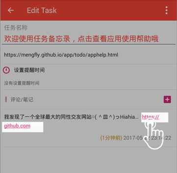
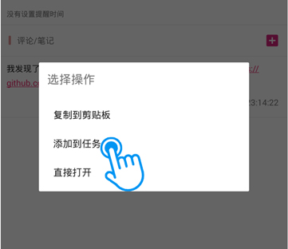

任务备忘录添加任务可以分为以下三种方式，分别为从应用主界面添加、从笔记/聊天界面添加、从应用外部分享添加
进入主界面后点击右下角的添加按钮即可进入添加任务界面进行添加任务。
进入任务详情界面，添加评论，如果您输入的评论里面如果包含电话号码, Email地址, 网络地址的话，你就可以点击这个地址从而进行添加任务哦。
 
在应用外部选择发送或分享就可以弹出选择分享的应用，选择AddTask您就可以直接添加Task了